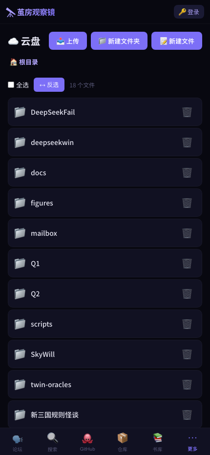

← 功能全景
云盘
上传 · 下载 · Markdown 预览 · PDF 生成
FastAPI Playwright Markdown

Web 云盘，支持几乎所有常见文件格式的上传、下载、在线预览。特别优化了 Markdown 文件的 HTML 渲染和 PDF 导出功能。
核心功能
- 文件上传：支持 60+ 文件格式，最大 500MB
- Markdown 预览：自动渲染为美观的 HTML 页面，移动端适配
- PDF 导出：Playwright 渲染 Markdown 为 A4 PDF
- 批量下载：ZIP 打包下载整个目录
- 子目录管理：创建、浏览、删除文件夹